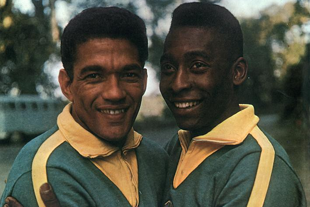

O Bicampeonato
A Copa de 1962, no Chile, foi a confirmação da força do futebol brasileiro. Mesmo com a lesão precoce de Pelé, a equipe brilhou com Garrincha assumindo o protagonismo e levando o Brasil ao bicampeonato. Na final, o Brasil derrotou a Tchecoslováquia por 3 a 1, com gols de Amarildo, Zito e Vavá.
Elenco

Gilmar, Djalma Santos, Mauro, Zózimo, Nilton Santos, Zito, Didi, Garrincha, Amarildo, Vavá e Zagalo.
Goleadores

Garrincha (4 gols), Vavá (4 gols), Amarildo (3 gols)